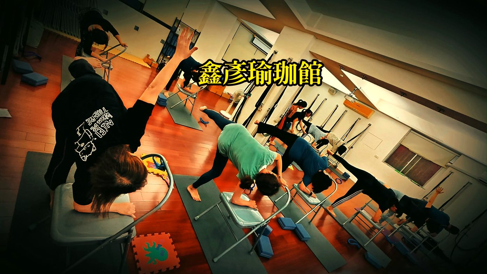

壓力大或生理期疲累，今天適合休息還是輕輕動？

下班到家，運動服已經拿出來了，你卻只想坐在沙發上。碰到生理期那幾天，你猶豫的是，今天到底需要活動一下，還是先休息就好。
壓力大或生理期覺得累時，可以依當天感受，在休息、換姿勢或短暫活動中挑一項。靠椅背或抱枕可增加支撐，也能縮小需要控制的動作幅度。選擇能自在呼吸、可以隨時停下的方式。經痛比平常嚴重、經量改變或影響日常時，先尋求醫療評估。
今天要休息、換姿勢，還是輕輕動一下？
如果只是下班很累，可以先挑一個能自在呼吸的位置，再決定是否想站起來走幾步。如果想理解輔具承托身體的修復瑜伽，可先看支柱介紹。當天不想練，也可以就停在休息。
👆 手機版可左右滑動
| 今天的狀況 | 可以考慮的選擇 | 先留意的界線 |
|---|---|---|
| 下班疲累，想休息 | 用椅面或抱枕承托，留一段安靜時間。 | 可以不做動作或固定呼吸拍數。 |
| 想活動一下，感覺仍舒服 | 換個坐法，或短暫走動。 | 不適增加就停，無須湊滿時長。 |
| 經痛變重、經量變化或影響生活 | 記錄變化並向醫療專業人員詢問。 | 體態觀察不能判斷經痛原因。 |
經痛和一般疲累，什麼情況該先找醫師？
經痛比平常嚴重、痛到影響日常，或經量、週期出現變化，應向醫療專業人員詢問。若劇烈或明顯加重，請及時尋求醫療協助。想整理有哪些不適和影響值得告訴醫師，可看經痛衛教篇與NHS 經痛資訊。
常見問題
生理期一定要做修復瑜伽嗎？
可以依當天感受決定活動或休息。沒有每個人都必須做的一套動作。
一般疲累和經痛可以用同一張表判斷嗎？
建議分開記。經痛或經量有變化時，先就身體狀況尋求合適的評估。
先記下最有感的日常時刻
只想記錄一般日常活動感受時，可以用掃描整理情境。若主要困擾是經痛或經量變化，請先走醫療評估。
約 2 分鐘，免登入、免加 LINE。做完可用 3 天觀察卡整理日常感受。
開始免費 2 分鐘體態訊號掃描 →延伸閱讀 想了解有輔具支撐的課型，可讀修復瑜伽介紹